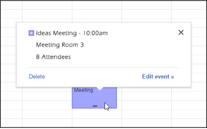
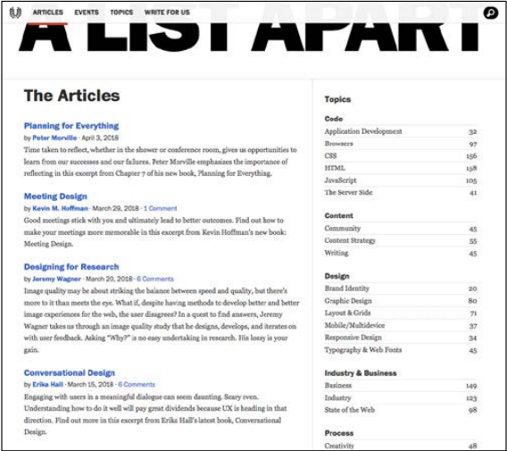

21 tháng 08, 2020
Lập trình web UI-UXPhông chữ thương hiệu của công ty bạn (font chữ dùng riêng trong thiết kế nhận dạng thương hiệu) rất đẹp, hấp dẫn
nhưng nó khiến cho người dùng mất thêm 3 giây khi tải trang web (vì phông chữ cần được tải xuống từ máy chủ)
khiến người dùng bực bội vì phải chờ đợi.
Nếu chỉ dùng phông chữ thương hiệu này cho tiêu đề và đề mục lớn thì ok, nó sẽ giúp gây ấn tượng và thích thú
cho khách hàng. Nhưng nếu sử dụng cả cho phần nội dung thì nói chung, là một ý tưởng tồi.
Thứ nhất, những phông chữ kiểu cách này đều phải tải về từ đâu đó : Google fonts, Typekit hoặc CDN của bạn, sẽ
mất thời gian để tải về và hiển thị chúng. Đáng sợ nhất là trong khoảng thời gian ngắn ngủi chờ tải và hiện thị
những trang nội dung chứa phông chữ cầu kì này, trang của bạn bị lỗi, phải tải lại, hoặc hiển thị không đầy
đủ.
Người ta gọi đây là lỗi “Flash of unstyled content”- khoảnh khắc mà chữ hiển thị không có kiểu chữ
Thứ 2, khi chỉ định dùng những phông chữ độc lạ, bạn nghĩ sẽ tạo nên hiệu ứng tốt cho trang web? Bạn nên nghĩ
lại, trang của bạn sẽ hiển thị khác nhau đối với những người sử dụng thiết bị di động và 1000 thiết bị khác.
May mắn là, cho dù bạn dùng điện thoại hay máy tính, hệ điều hành Window, Mac hay Linux, chúng đều có nhưng phông
chữ rất đẹp, dễ đọc, sẵn sàng để sử dụng. "System font stack" là một luật CSS khuyên người thiết kế hãy sử dụng
phông chữ, kiểu chữ có sẵn trong hệ thống.Trong hầu hết các trường hợp, sử dụng phông chữ có trong hệ thống
khiến việc tải trang nhanh hơn, chữ nét và dễ đọc.
Đây là một cách đơn giản, hiệu quả mà nhà thiết kế tổ chức sắp xếp nội dung trong trang, làm cho phần lớn người
đọc có thể hiểu ngay lập tức những thông tin cần truyền đạt.
Ví dụ nhé :
Bạn thấy thông tin quan trọng là tên cuộc họp và thời gian ở hình bên phải rất dễ nhận biết và ghi nhớ ngay phải
không ? Chỉ cần một động tác điều chỉnh cỡ chữ lớn lên là xong.
Bạn cần cân nhắc về độ quan trọng của các thông tin, quan trọng nhất thì để nó ở phông chữ lớn nhất, nếu
người
đọc quan tâm, họ sẽ đọc tiếp các phần khác có cỡ chữ nhỏ hơn.
Ví dụ tiếp theo là trên các trang báo
Tiêu đề chính cần tóm tắt ý chính rất rõ ràng Tiêu đề phụ (subtitle) bổ sung ngữ cảnh, dẫn dắt gợi mở những câu
hỏi
Còn nội dung mở rộng câu chuyện bằng cách từ từ thêm chi tiết. Làm sao để người đọc xem đến những cuối để biết
thêm những chi tiết minh hoạ bổ sung…
Tip : Sử dụng việc tăng cỡ chữ thật đúng đắn, đừng lạm dụng nó. Nếu dòng nào trong bài viết cũng cỡ chữ to hết
thì chẳng còn phân biệt được thông tin nào cần lưu ý hơn.
(Dịch từ cuốn "101 UX principles" của tác giả Will Grant)
BÌNH LUẬN :